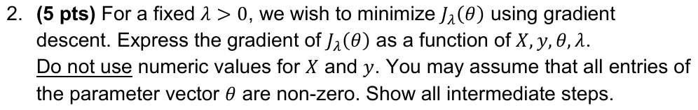
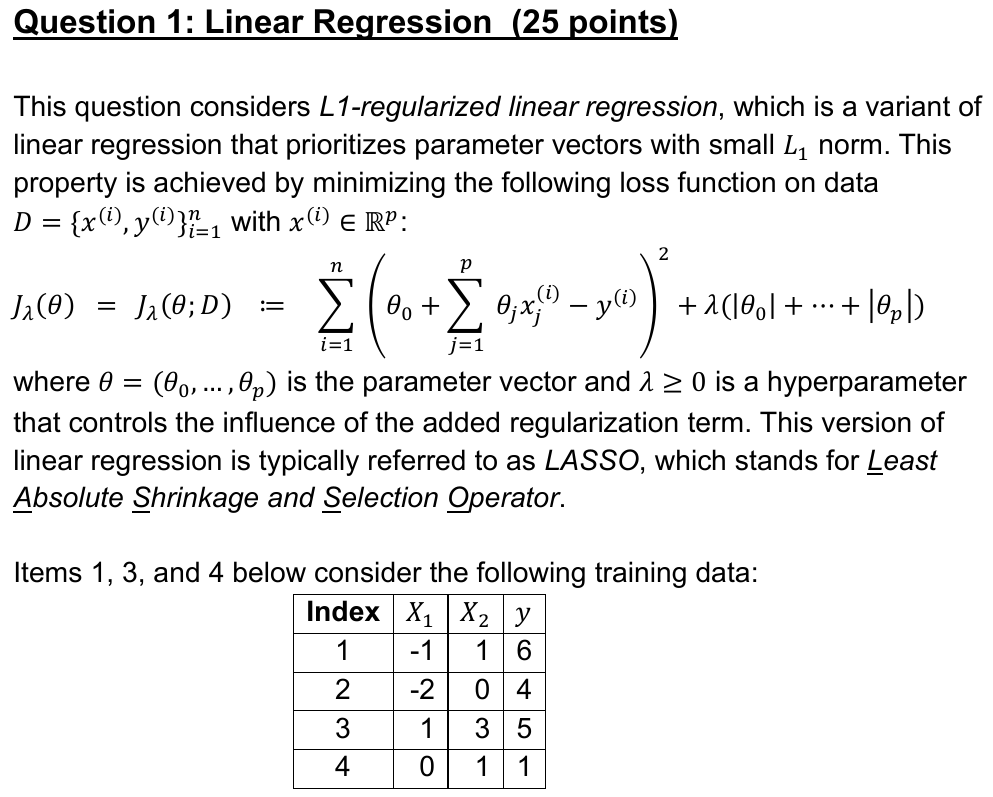
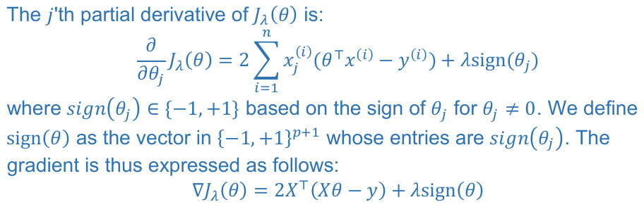

Read the numbered lines first; together they are the whole idea. Open "explain more" only on a line that doesn't click.
Knobs. A linear model predicts \(\hat y = \theta_0 + \theta_1 x_1 + \theta_2 x_2\). The numbers \(\theta_0, \theta_1, \theta_2\) are its weights: think of them as three knobs. \(\theta_0\), the bias, is added no matter what the features are (note 0).
Residual. For a sample from the table we know the true label, so \(r_i = \hat y_i - y_i\) measures how far off we are: 0 is perfect, positive is too high, negative is too low.
Why \(\theta^\top x^{(i)}\). Write the bias as \(\theta_0\cdot 1\). Then the prediction is the dot product of \((1, x^{(i)}_1, x^{(i)}_2)\) with \((\theta_0, \theta_1, \theta_2)\). Stacking these rows gives the matrix \(X\) (first column all ones), so \(X\theta\) is all predictions and \(r = X\theta - y\) is all residuals (note 1).
Why squares. Adding raw residuals fails: \(+3\) and \(-3\) would cancel to 0. Squares can't be negative, and they make big errors cost more (note 2).
The penalty. LASSO adds \(\lambda\) times the absolute value of every weight, so large weights cost something. In 2025-C it includes \(\theta_0\): read the stem's formula (note 3).
The picture. Imagine \(J\) as a landscape. Your position is the knob setting \(\theta\); the height at that position is the loss \(J(\theta)\). Training = finding the lowest point. You can't see the whole landscape, but where you stand you can feel which way the ground slopes. The gradient is that slope.
One knob. \(\partial J/\partial\theta_1\) answers: "if I turn only knob \(\theta_1\) up a tiny bit and hold the others still, how fast does \(J\) change?" Compute it like an ordinary derivative, treating the other knobs as constants. Positive means turning \(\theta_1\) up makes the loss worse; negative means it makes it better.
All knobs. Stack them:
\[\nabla J = \left(\frac{\partial J}{\partial\theta_0},\ \frac{\partial J}{\partial\theta_1},\ \frac{\partial J}{\partial\theta_2}\right)\]Recall \(r_i = \theta_0\cdot 1 + \theta_1 x^{(i)}_1 + \theta_2 x^{(i)}_2 - y_i\). Differentiate with respect to \(\theta_1\): only the term \(\theta_1 x^{(i)}_1\) contains \(\theta_1\); everything else is a constant with derivative 0. So \(\partial r_i/\partial\theta_1 = x^{(i)}_1\).
For \(\theta_0\) the number in front is the constant 1. Calling it "feature 0", \(x^{(i)}_0 = 1\), makes one rule cover every knob. It is the ones column of \(X\).
The official solutions quote this as "we've seen in class that \(\frac{\partial}{\partial w_j} r_i = x^{(i)}_j\)". You may do the same.
One sample. Sample \(i\) contributes \(r_i^2\). Chain rule, (outer derivative) \(\times\) (inner derivative):
\[\frac{\partial}{\partial\theta_j}\, r_i^2 = 2r_i\cdot\frac{\partial r_i}{\partial\theta_j} = 2r_i\,x^{(i)}_j\]All samples. The derivative of a sum is the sum of the derivatives:
\[\frac{\partial J}{\partial\theta_j} = \sum_{i=1}^{n} 2r_i\,x^{(i)}_j\]Pull the 2 out: \(2\sum_i r_i x^{(i)}_j\). What's left is \(x^{(1)}_j r_1 + x^{(2)}_j r_2 + \dots + x^{(n)}_j r_n\). The numbers \(x^{(1)}_j, \dots, x^{(n)}_j\) are feature \(j\) of every sample: exactly column \(j\) of \(X\). So the sum is a dot product: (column \(j\) of \(X\)) \(\cdot\, r\).
\(X^\top\) is \(X\) with its columns turned into rows, so \(X^\top r\) computes exactly these dot products, one per column. With \(r = X\theta - y\):
\[\nabla\sum_i r_i^2 = 2X^\top(X\theta - y)\]The absolute value has two straight pieces: \(|a| = a\) when \(a > 0\) (slope \(+1\)) and \(|a| = -a\) when \(a \lt 0\) (slope \(-1\)). So:
\[\begin{aligned}\frac{d}{da}|a| &= \mathrm{sign}(a)\\ &= \begin{cases}+1 & a > 0\\ -1 & a \lt 0\end{cases}\end{aligned}\]At \(a = 0\) there is a corner and no derivative. That is why 2025-C Q1.2 says "you may assume that all entries of \(\theta\) are non-zero".
Differentiating \(\lambda(|\theta_0| + |\theta_1| + |\theta_2|)\) with respect to \(\theta_j\): only \(|\theta_j|\) contains \(\theta_j\), so the result is \(\lambda\,\mathrm{sign}(\theta_j)\). No factor 2 here. Stacked, it is the vector \(\lambda\,\mathrm{sign}(\theta)\).
The gradient of a sum is the sum of the gradients: line 5 (squared error) plus line 6 (penalty). This is the official answer to 2025-C Q1.2.
Link to the formula sheet. The sheet gives \(\nabla_w\big[\tfrac12(y - w^\top x)^2\big] = (w^\top x - y)\,x\) for one sample. Its \(\tfrac12\) cancels the 2 from the chain rule. The exam losses have no \(\tfrac12\), so their gradient keeps the 2. Don't copy the sheet's version blindly.
The residuals come from note 1: \(X\theta = (6, 5, 8, 4)\), minus \(y = (6, 4, 5, 1)\), gives \(r = (0, 1, 3, 3)\). The rows of \(X^\top\) are the columns of \(X\):
\[X^\top = \begin{bmatrix}1&1&1&1\\-1&-2&1&0\\1&0&3&1\end{bmatrix}\]\(2\cdot(7, 1, 12) = (2\cdot 7,\ 2\cdot 1,\ 2\cdot 12) = (14, 2, 24)\). All three entries are positive: turning any knob up would increase the squared error, most of all \(\theta_2\). That matches the residuals: every prediction was too high or exact.
Same result by rows. \(z = 2r = (0, 2, 6, 6)\); multiply each row of \(X\) by its \(z_i\) and add:
\[\begin{aligned}&\phantom{=}\ 0\cdot(1, -1, 1) + 2\cdot(1, -2, 0)\\ &\quad + 6\cdot(1, 1, 3) + 6\cdot(1, 0, 1)\\ &= (0, 0, 0) + (2, -4, 0)\\ &\quad + (6, 6, 18) + (6, 0, 6)\\ &= (14, 2, 24)\end{aligned}\]The signs: \(\mathrm{sign}(1) = +1\), \(\mathrm{sign}(-2) = -1\), \(\mathrm{sign}(3) = +1\), so \(\lambda\,\mathrm{sign}(\theta) = 1\cdot(1, -1, 1) = (1, -1, 1)\).
\[\begin{aligned}\nabla J_\lambda &= (14 + 1,\ 2 + (-1),\ 24 + 1)\\ &= (15, 1, 25)\end{aligned}\]Official-solution slip. The official 2025-C Q1.3 solution prints the middle entry as 0. That is an arithmetic slip: \(2 + (-1) = 1\).


Cover the page above. On paper: the \(j\)-th partial derivative, then the whole gradient.

Its first line is core lines 3–6 for one knob \(j\); its last line is "the one formula".
With \(r = (0, 1, 3, 3)\) and column 1 of \(X\) equal to \((-1, -2, 1, 0)\): what is entry 1 of \(X^\top r\)?